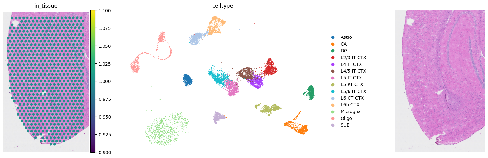
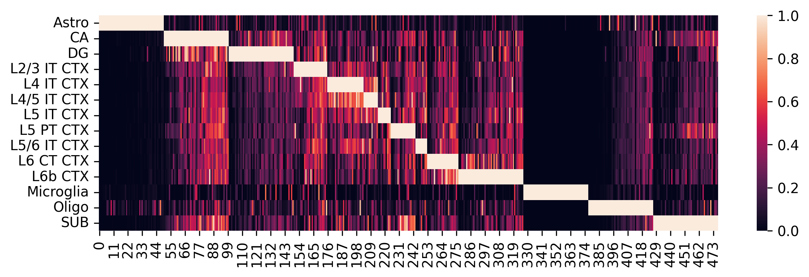
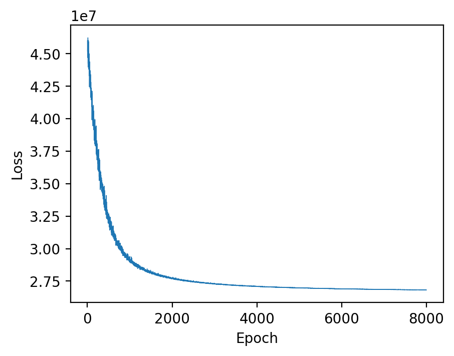
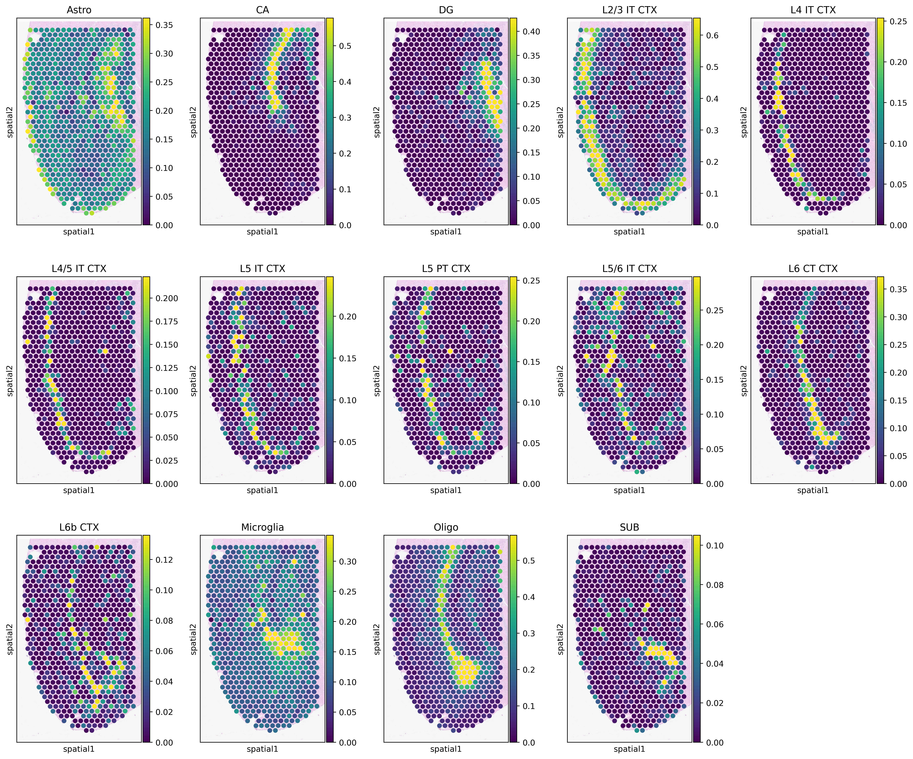
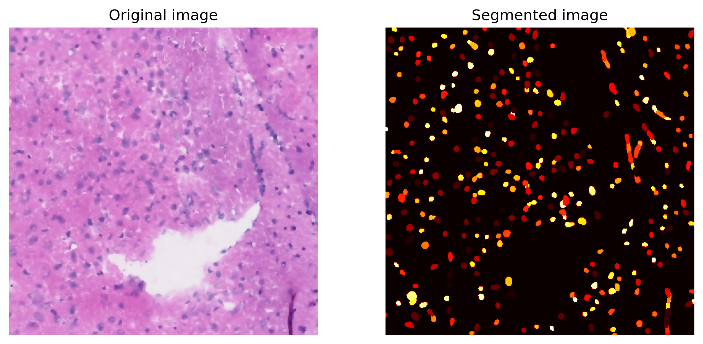
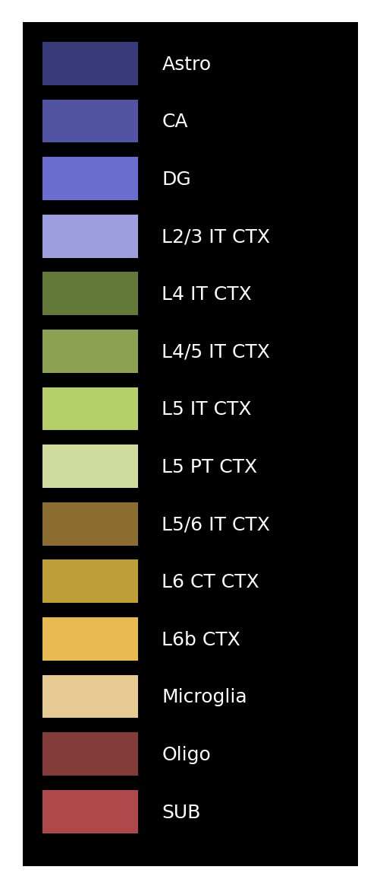
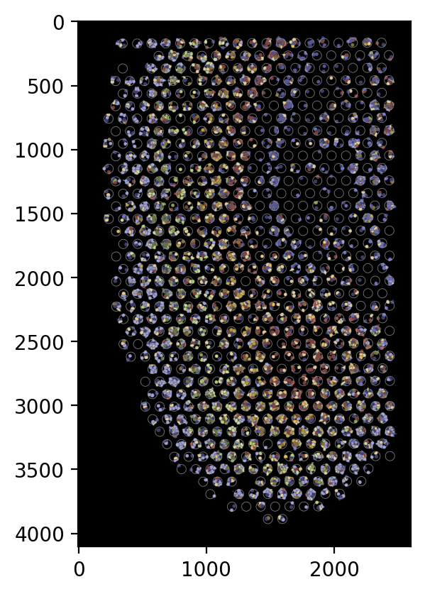
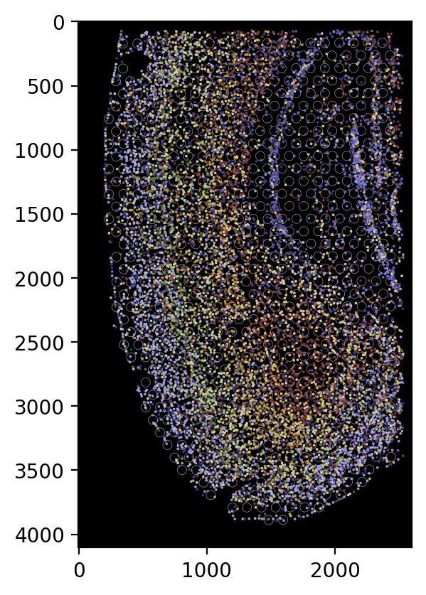

Deconvolution and Decomposition of Mouse Cortex Visium Data using Spotiphy
by Ziqian Zheng zzheng92@wisc.edu and Jiyuan Yang jiyuan.yang@stjude.org.
Last update: Sep 15th 2025
Contents
Environment Setup: Package Installation and Loading
Data Preparation: Loading and Processing
Deconvolution: Marker Gene Selection and scRNA Reference Construction
Deconvolution: Cellular Proportion Estimation
Deconvolution: Cell Number Estimation Using Segmentation
Decomposition: Expression Breakdown of Each Spot to Single-cell Resolution
Imputation: Creation of Pseudo Single-cell resolution Image
Environment Setup: Package Installation and Loading
If you’re using you local environment, please ensure that spotiphy is correctly installed by following the instructions on its GitHub page.
If you’re using Google Colab, please execute the following code block to install spotiphy and all its dependencies. To ensure the code runs smoothly in Google Colab, we will manually eliminate some unnecessary Jupyter variables.
😮Important: To get enough RAM, Colab Pro might be needed.
For the first time the following code block is executed in Google Colab, you may get an error of inconsistent package versions like this:
ERROR: pip’s dependency resolver does not currently take into account all the packages that are installed. This behaviour is the source of the following dependency conflicts.
To solve this issue, simply ignore this error and restart the session (Click Runtime, then click Restart Session). Then you will be able to load the packages correctly.
[3]:
import sys
IN_COLAB = "google.colab" in sys.modules
if IN_COLAB:
!pip install -qq spotiphy
[1]:
import sys
sys.path.append("..")
import os
import spotiphy
import pickle
import numpy as np
import pandas as pd
import matplotlib as mpl
import scanpy as sc
import torch
import cv2
Specify the output folder.
[2]:
results_folder = "Spotiphy_Result/"
if not os.path.exists(results_folder):
# Create result folder if it does not exist
os.makedirs(results_folder)
Data Preparation: Loading and Processing
Check if the example datasets exist. If not, download them from GitHub.
[3]:
import requests
if not os.path.exists("data/"):
os.makedirs("data/")
data_path = [
"data/scRNA_mouse_brain.h5ad",
"data/ST_mouse_brain.h5ad",
"data/img_mouse_brain.png",
]
urls = [
"https://raw.githubusercontent.com/jyyulab/Spotiphy/main/tutorials/data/scRNA_mouse_brain.h5ad",
"https://raw.githubusercontent.com/jyyulab/Spotiphy/main/tutorials/data/ST_mouse_brain.h5ad",
"https://raw.githubusercontent.com/jyyulab/Spotiphy/main/tutorials/data/img_mouse_brain.png",
]
for i, path in enumerate(data_path):
if not os.path.exists(path):
response = requests.get(urls[i], allow_redirects=True)
with open(path, "wb") as file:
file.write(response.content)
del response
Load the scRNA data, visium data and the corresponding H&E staining image.
[4]:
adata_sc = sc.read_h5ad("data/scRNA_mouse_brain.h5ad")
adata_st = sc.read_h5ad("data/ST_mouse_brain.h5ad")
img = cv2.imread("data/img_mouse_brain.png")
# Another opinion for loading Visium data is to use the following function and point the directory to the 10x Visium raw data folder.
# adata_st = sc.read_visium("data/ST_mouse_brain/outs")
key_type refers to the annotation of scRNA data used for reference construction. If modifications are needed, such as merging several cell subtypes into a general cell type, use the following code:
# #Define the cell types to merge and the new cell type name
# types_to_merge = ['subtype1A', 'subtype1B', 'subtype1C', 'subtype1D']
# new_type = 'Type1'
#
# #Merge the specified cell types into the new type
# adata_sc.obs['cellType'] = adata_sc.obs['cellType'].replace(types_to_merge, new_type)
[5]:
key_type = "celltype"
type_list = sorted(list(adata_sc.obs[key_type].unique().astype(str)))
print(f"There are {len(type_list)} cell types: {type_list}")
adata_st.var_names_make_unique()
There are 14 cell types: ['Astro', 'CA', 'DG', 'L2/3 IT CTX', 'L4 IT CTX', 'L4/5 IT CTX', 'L5 IT CTX', 'L5 PT CTX', 'L5/6 IT CTX', 'L6 CT CTX', 'L6b CTX', 'Microglia', 'Oligo', 'SUB']
Convert the spatial coordinates into integer values.
[6]:
adata_st.obsm["spatial"] = adata_st.obsm["spatial"].astype(np.int32)
# print(adata_st.obsm['spatial'])
Verify all inputs carefully before proceeding.
[7]:
fig, axs = mpl.pyplot.subplots(1, 3, figsize=(20, 5))
sc.pl.spatial(adata_st, color="in_tissue", frameon=False, show=False, ax=axs[0])
sc.pl.umap(adata_sc, color=key_type, size=10, frameon=False, show=False, ax=axs[1])
axs[2].imshow(
img[:, :, [2, 1, 0]]
) # In default, cv2 uses BGR. So we convert BGR to RGB.
axs[2].axis("off")
mpl.pyplot.tight_layout()
mpl.pyplot.savefig(
results_folder + "figurepath+figurename.jpg", bbox_inches="tight", dpi=400
)
scatterplots.py (392): No data for colormapping provided via 'c'. Parameters 'cmap' will be ignored

Deconvolution: Marker Gene Selection and scRNA Reference Construction
Initialize the spatial transcriptomics and scRNA data. Specifically,
adata_scandadata_stare normalizedcells and genes in
adata_scare filteredonly the common genes shared by
adata_scandadata_stare kept
[8]:
adata_sc, adata_st = spotiphy.initialization(adata_sc, adata_st, verbose=1)
Convert expression matrix to array: 0.42s
Normalization: 1.25s
Filtering: 1.59s
Find common genes: 0.02s
Select marker genes based on pairwise statistical tests. The selected marker genes are saved as a CSV file.
Users can adjust the following arguments:
n_select: the maximum number of marker genes select for each cell typethreshold_p: threshold of the \(p\)-value to be considered significantthreshold_fold: threshold of the fold-change to be considered significantq: Since more than one \(p\)-values are obtained in using the pairwise tests, we only consider the \(p\)-value at quantileq. For additional details, please refer to the supplementary material of the paper.return_dict: Whether return a dictionary representing the marker genes selected for each cell type, or just return the list of all selected marker genes.
The parameters specified in the following code block provide a good starting point.
[9]:
marker_gene_dict = spotiphy.sc_reference.marker_selection(
adata_sc,
key_type=key_type,
return_dict=True,
n_select=50,
threshold_p=0.1,
threshold_fold=1.5,
q=0.15,
)
marker_gene = []
marker_gene_label = []
for type_ in type_list:
marker_gene.extend(marker_gene_dict[type_])
marker_gene_label.extend([type_] * len(marker_gene_dict[type_]))
marker_gene_df = pd.DataFrame({"gene": marker_gene, "label": marker_gene_label})
marker_gene_df.to_csv(f"{results_folder}marker_gene.csv")
# Filter scRNA and spatial matrices with marker genes
adata_sc_marker = adata_sc[:, marker_gene]
adata_st_marker = adata_st[:, marker_gene]
Construct the single-cell reference and visualize selected marker genes with heatmaps.
Adjust parameters in the previous step as needed to optimize marker gene selection:
If several cell types are very similar (e.g., T cell subtypes), try setting
q=0.3or adjust accordingly.If there are limited marker genes for each cell type, try setting
threshold_fold=1.2or adjust as needed.
[10]:
sc_ref = spotiphy.construct_sc_ref(adata_sc_marker, key_type=key_type)
spotiphy.sc_reference.plot_heatmap(
adata_sc_marker, key_type, save=True, out_dir=results_folder
)
14it [00:00, 1272.90it/s]

Another opinion will be input your customized marker gene list. Use the following code:
#marker_gene = pd.read_csv(results_folder+'customized_marker_genes.csv', header=0)
Deconvolution: Cellular Proportion Estimation
For performing the deconvolution, we calculate the posterior distribution of certain parameters within a probabilistic generative model using `Pyro <https://pyro.ai/>`__.
Parameters of the function estimation_proportion:
X: Spatial transcriptomics data. n_spot*n_gene.adata_sc: scRNA data (Anndata).sc_ref: Single cell reference. n_type*n_gene.type_list: List of the cell types.key_type: Column name of the cell types in adata_sc.batch_prior: Parameter involved in the prior distribution of the batch effect factors. It is recommended to select from \([1, 2]\).n_epoch: Number of training epoch.
[11]:
device = "cuda" if torch.cuda.is_available() else "cpu"
X = np.array(adata_st_marker.X)
cell_proportion = spotiphy.deconvolution.estimation_proportion(
X,
adata_sc_marker,
sc_ref,
type_list,
key_type,
n_epoch=8000,
plot=True,
batch_prior=1,
device=device,
)
adata_st.obs[type_list] = cell_proportion
# Save the cellular proportions for future usage
np.save(results_folder + "proportion.npy", cell_proportion)
np.savetxt(results_folder + "proportion.csv", adata_st.obs[type_list], delimiter=",")
100%|██████████| 8000/8000 [01:17<00:00, 103.71it/s]

2325827637.py (14): Trying to modify attribute `.obs` of view, initializing view as actual.
Generate heatmaps of cellular proportions.
[12]:
vmax = np.quantile(adata_st.obs[type_list].values, 0.98, axis=0)
vmax[vmax < 0.05] = 0.05
with mpl.rc_context(
{"figure.figsize": [3, 5], "figure.dpi": 400, "xtick.labelsize": 0}
):
ax = sc.pl.spatial(
adata_st,
cmap="viridis",
color=type_list,
img_key="hires",
vmin=0,
vmax=list(vmax),
size=1.3,
show=False,
ncols=5,
alpha_img=0.4,
)
ax[0].get_figure().savefig(f"{results_folder}Spotiphy_deconvolution.jpg")

Deconvolution: Cell Number Estimation Using Segmentation
Stardist package is used to segment nuclei from H&E staining images, after which the number of nuclei in each spot is counted. Note that the image and segmentation step is not required if only deconvolution results are needed.
Parameters use in function Segmentation:
img(numpy.ndarray):. Three channel stained image. In default, it should be hematoxylin and eosin (H&E) stained image.spot_center: Coordinates of the center of the spots.out_dir: Output directory.Prob_thresh,nms_thresh: Two thresholds used in Stardist. User should adjust these two thresholds based on the segmentation results. More details can be found here.spot_radius: Radius of the spots. In the example image, it should be 36.5 in pixel (55 um).n_tiles: Out of memory (OOM) errors can occur if the input image is too large. To avoid this problem, the input image is broken up into (overlapping) tiles that are processed independently and re-assembled. In default, we break the image into 8*8 tiles.enhancement: An image enhancement feature for pre-processing input images. Users can enable or disable this feature by setting the parameter toTrueorFalse. It is recommended to compare the segmentation outputs with enhancement ON and OFF. Preliminary comparisons indicate that enhanced HE images can significantly reduce the false negative rate of StarDist, allowing for the detection of more accurate nuclei.
[13]:
if not os.path.exists(f"{results_folder}segmentation/"):
os.makedirs(f"{results_folder}segmentation/")
segmentation = spotiphy.segmentation.Segmentation(
img[:, :, [2, 1, 0]],
adata_st.obsm["spatial"],
n_tiles=(2, 2, 1),
out_dir=f"{results_folder}segmentation/",
enhancement=True,
)
segmentation.segment_nucleus(save=True)
n_cell_df = segmentation.n_cell_df
# Save the segmentation for future usage
df = pd.DataFrame(n_cell_df)
df.to_csv(f"{results_folder}segmentation/n_cell_per_spot.csv", index=False)
Suppress the output of tensorflow prediction for tensorflow version 2.12.0>=2.9.0.
Found model '2D_versatile_he' for 'StarDist2D'.
Loading network weights from 'weights_best.h5'.
Loading thresholds from 'thresholds.json'.
Using default values: prob_thresh=0.692478, nms_thresh=0.3.
100%|██████████| 4/4 [00:02<00:00, 1.87it/s]
Plot a small section of the segmented results for examination.
[14]:
segmentation.plot(
save=True,
crop=(2000, 2500, 1000, 1500),
path=results_folder + "segmentation/segmentation_sample.jpg",
)

Decomposition: Expression Breakdown of Each Spot to Single-cell Resolution
To decompose all genes in the spatial transcriptomics data, both scRNA-seq data and spatial transcriptomics data must be reloaded. n_cell represents the number of cells in each spot, with four opinions available:
n_cell_df['cell_count'].values. The default setting, which uses the number of nuclei derived from segmentation results.estimate. Estimates the number of cells based on the total counts for each spot.[fixed_value] * len(adata_st_orig). A user defined[fixed_value]is applied as the cell number for all spots.None. Assumes that a cell type does not exist in a spot unless its proportion exceeds thethreshold.
For more details, please refer to the document.
[15]:
adata_sc_orig = sc.read_h5ad("data/scRNA_mouse_brain.h5ad")
adata_st_orig = sc.read_h5ad("data/ST_mouse_brain.h5ad")
adata_st_orig.var_names_make_unique()
[16]:
# Read in the saved segmentation results.
# n_cell_df = pd.read_csv(results_folder+'segmentation/n_cell_df.csv', header=0)
n_cell = n_cell_df["cell_count"].values
adata_st_decomposed = spotiphy.deconvolution.decomposition(
adata_st_orig,
adata_sc_orig,
key_type,
cell_proportion,
save=True,
out_dir=results_folder,
verbose=1,
spot_location=adata_st_orig.obsm["spatial"],
filtering_gene=True,
n_cell=n_cell,
filename="ST_decomposition.h5ad",
)
Prepared proportion data. Time use 0.02
Initialized scRNA and ST data. Time use 3.30
14it [00:00, 49.40it/s]
Processed scRNA and ST data. Time use 1.17
Decomposition complete. Time use 0.89
Constructed ST decomposition data file. Time use 0.32
Saved file to output folder. Time use 2.62
Imputation: Creation of Pseudo Single-cell resolution Image
The H&E staining image only highlights nuclei, we first infer the boundary of each cell. Specifically, the area of each cell is gradually expended outward from the center of its nucleus. The expansion stopped when one of the following conditions is met:
The cell area exceeds
max_area.The surrounding neighborhood is fully occupied by other cells.
The maximum distance from the cell boundary to the nucleus center exceeds
max_dist.deltarepresent the incremental expansion distance in each iteration.
[17]:
search_direction = [
[1, 0],
[0, 1],
[-1, 0],
[0, -1],
[2, 0],
[0, 2],
[-2, 0],
[0, -2],
[1, 1],
[-1, 1],
[-1, -1],
[1, -1],
]
boundary_dict = spotiphy.segmentation.cell_boundary(
segmentation.nucleus_df[["x", "y"]].values,
img_size=img.shape[:2],
max_dist=25,
max_area=580,
verbose=0,
search_direction=search_direction,
delta=2,
)
# Save the dictionary of the cell boundaries for future usage
with open(results_folder + f"segmentation/boundary_dict.pkl", "wb") as file:
pickle.dump(boundary_dict, file)
100%|██████████| 12/12 [00:03<00:00, 3.83it/s]
100%|██████████| 4100/4100 [00:02<00:00, 1374.21it/s]
Assign cell types to nuclei in the spatial image through the following steps:
Function
proportion_to_count: Calculate the count of each cell type based on segmentation results and the estimated cellular proportions.Function
assign_type_spot: Assign cell types to nuclei within the spatial spots.Function
cell_proportion_smooth: Allocate cell types to nuclei located outside the spatial spots.
[18]:
cell_number = spotiphy.deconvolution.proportion_to_count(
cell_proportion, n_cell_df["cell_count"].values, multiple_spots=True
)
segmentation.nucleus_df = spotiphy.deconvolution.assign_type_spot(
segmentation.nucleus_df, segmentation.n_cell_df, cell_number, type_list
)
segmentation.nucleus_df, cell_proportion_smooth = (
spotiphy.deconvolution.assign_type_out(
segmentation.nucleus_df,
cell_proportion,
segmentation.spot_center,
type_list,
band_width=150,
)
)
Define the class plot_visium to generate the pseudo image. Plot the image legend.
[19]:
plot_visium = spotiphy.plot.Plot_Visium(
segmentation=segmentation, boundary_dict=boundary_dict, type_list=type_list
)
plot_visium.plot_legend(save=f"{results_folder}legend.png")

Generate the pseudo image by specifying the following arguments:
shape: Defines the shape used for cells in the image. Opinions includecell,nucleus, orcircle.cell: Indicates which group of cells to include in the image. Choose fromin,out, orboth.boundary: Indicates which group of boundaries to include in the image. Choose fromin,out,bothorNone.
For example, to generate a pseudo image containing only cells inside the spatial spots, use the following settings.
[20]:
# To generate a pseudo image containing only cells inside the spatial spots, use the following settings.
plot_visium.plot(
background=False,
save=f"{results_folder}pseudo_image_in.png",
spot_color=(200, 200, 200),
shape="cell",
cell="in",
boundary="in",
dpi=200,
)
Adding cells.
100%|██████████| 4100/4100 [00:03<00:00, 1362.18it/s]
14it [00:00, 39.58it/s]
11005it [00:00, ?it/s]
100%|██████████| 11005/11005 [00:00<00:00, 695123.95it/s]
Adding spots.
Saving the image.

[21]:
# To display all cells as circles without the cell boundaries, use the following settings.
plot_visium.plot(
background=False,
save=f"{results_folder}pseudo_image_both_circle.png",
spot_color=(200, 200, 200),
shape="circle",
cell="both",
boundary=None,
dpi=200,
)
Adding cells.
11005it [00:00, 611603.34it/s]
100%|██████████| 11005/11005 [00:00<?, ?it/s]
Adding spots.
Saving the image.

The updated class Segmentation can be saved for future usage.
[22]:
with open(f"{results_folder}segmentation/segmentation.pkl", "wb") as file:
pickle.dump(segmentation, file)